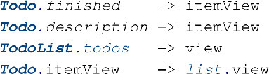
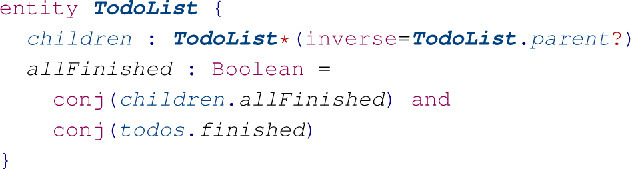

1 Introduction
Modern web applications are interactive. Data edits do not trigger page reloads, but in-place DOM updates. These DOM updates could be written by hand, but this is a tedious and error-prone exercise. A declarative, but naive, solution would be to rebuild the entire DOM from a declarative render function on each edit. However, DOM operations are slow, so this approach leads to unresponsive interfaces for large applications. Furthermore DOM elements would lose their local state (such as focus and event handlers). Current state-of-the art declarative solutions maintain a virtual DOM, and patch the browser DOM based on the diffs between virtual DOM renders. When data is edited, these solutions compare the view before and after the data edit and apply DOM updates to patch the difference. Since calculating the minimal difference between two trees is O(n 3) [5], these solutions use O(n) non-minimal tree-diffing algorithms. Possible scalability issues with non-minimal tree diffing can be mitigated by identifying which sub-trees need to be updated on a change. However, the programmer is responsible for correctly identifying these sub-trees, which leads to boilerplate code.
In this paper we present PixieDust, a web programming language that enables concise declarative definition of user interfaces by automatic derivation of code to compute incremental view updates based on compile-time static dependency analysis. The contributions of this paper are:
- The design of the PixieDust language supporting concise and declarative definition of data model and view.
- A static dependency analysis of the impact of model updates to views.
- A mapping of PixieDust programs to an implementation in JavaScript of incremental view updates using the React framework as basis.
- An evaluation showing that the performance of the approach is on-par with state-of-the-art approaches, with a factor 2 reduction in code size.
We proceed as follows. In the next section we analyze the state-of-the-art solutions, to see where error-prone boilerplate code is introduced. In Section 3 we propose an approach for static dependency tracking to identify sub-trees for rerendering. In Section 4 we present the PixieDust language for specifying data models and declarative views which incorporates this static dependency tracking. In Section 5 we formally define the dependency analysis for PixieDust. In Section 6 we formally define the operational semantics of PixieDust, detailing its interaction with the browser. In Section 7 we evaluate our language design, and in Section 8 we compare related work to PixieDust.
2 Existing Approaches
In this section we analyze techniques for efficient DOM updates used by state-of-the-art approaches and we identify problems with these techniques.
Linear Tree Diffing.
All state-of-the-art approaches use linear tree diffing (for example React [2]). Linear tree diffing algorithms compare old and new virtual DOM trees recursively per level. If the tag of a node is equal to the previous version, the browser DOM node remains intact. The attributes of intact nodes are compared, and any differences are patched in the DOM. The children of these nodes are traversed in the next level. If the tags are different, the entire node with its children are removed from the DOM and is rebuilt from scratch.
When children of a node are reordered, a linear diff algorithm cannot determine the new position of children. This means that instead of reordering the children, the children are replaced by each other. This can be very inefficient, for example when a child is added as first child (Figure 1). Adding identities to children enables reordering in linear time (Figure 2). However, it is the responsibility of the programmer to find suitable identities for the data structures that are being used and bind them to their sub-trees.
Identifying which parts of the DOM-tree need updating.
It is unnecessary to diff the entire tree structure when entire parts of the tree do not depend on the changes that were made. If a sub-tree is parameterized by the set of values it depends on, that information can be used to only diff when these values changed. There are multiple approaches to achieve this.
The first approach is to use immutable data. Elm [4] and Redux [3] use this approach. With immutable data structures and pure view functions, reference equality can be used to determine whether a sub-tree needs to be rerendered. When a value changes, only the node where that value is displayed, and the spine to the root of the tree are recalculated. Since immutable data structures cannot contain cycles, programmers need to use a tree structured data model. Since immutable data cannot be updated in place, solutions with immutable data use message passing to encode updates. These messages are dispatched to a pure function calculating the new state based on the previous state. This optimization does come with a lot of boilerplate: each action needs to be encoded in a data structure, and when these actions are decoded, the relevant part of the state needs to be looked up and modified (Figure 3).
An alternative approach to localize DOM diffing is to construct a dependency graph for views. That way views can observe writes that are made to their dependencies to trigger a rerender. Hence, calls to setters on data are automatically reflected in the user interface. MobX [1] is a framework that constructs the dependency graph dynamically while rendering. To achieve this at runtime, MobX relies on wrapping get and set operations of data. However, this can lead to subtle bugs where a child component is passed a value instead of the getter for that value.
Summary. In conclusion, all state-of-the-art solutions induce error-prone boilerplate code. All solutions require identity annotations on lists. The immutable data solutions (Elm and Redux) require encoding of data modifications into action objects, and the mutable data solution (MobX) traps getters and setters (which can accidentally be circumvented in JavaScript).
3 Static dependency tracking
The state-of-the-art client-side application frameworks induce error-prone boilerplate code and their assumptions can be accidentally violated leading to subtle bugs. We propose to use static dependency tracking as a solution to these issues. Static dependency tracking does not trap getters and setters at runtime (such as MobX), but instead (over)approximates the dependency structure at compile-time. View definitions reference parts of the data model. These references can be statically determined, and this can be used to decide which views should be rerendered after a data modification.
To illustrate how to statically derive dependencies, we consider a miniature ToDo application (Figure 4). A TodoList holds zero or more Todos. A Todo has a description and a finished flag. The view for a TodoList is a div containing a ul with a li for every item. Every Todo is rendered as a checkbox for the finished status and a span for the description.
By analyzing the body of the views, we can collect all referenced paths. The itemView references both fields of the Todo. The TodoList.view references the itemView of its todos. This means that this view needs to be updated both when a referenced itemView changes and when the todos list changes itself. Together, the application contains the following dependencies:
These dependencies can be inverted to get the data flow of the application. To be able to invert dependencies that reference todos, we need an inverse. Figure 4 defines the inverse of todos as Todo.list. When we invert dependencies we obtain the following data flow:

This data flow can be used to trigger rerendering of views on data modifications. Moreover, since views are parameterized by an entity, we can automatically assign keys to collections, without unnecessary boilerplate code.
We have designed and implemented PixieDust, a new language for declarative definition of user interfaces in the browser based on this dependency analysis. We will formalize this dependency analysis in Section 5, but first we will discuss the design of PixieDust.
4 PixieDust
PixieDust is a language for specifying data models and browser-based user interfaces that separates the concerns of model and view, literally by keywords (for example Figure 4). Everything defined in the data model is visible in the view, but not vice versa.
Data Model. For the data model we use the existing IceDust data modeling language [7, 8]. In IceDust, a data model consists of entities with fields. All fields have a type and a multiplicity. The multiplicities in IceDust are 1, ?, *, and + (similar to regular expressions and highlighted in red in examples). If multiplicities are omitted, they default to 1. Fields with an entity-type have an inverse. Whenever an object refers from such a field to another object, the other object refers back from its inverse field. Lastly, IceDust features derived value fields: fields for which the value is calculated. For example, we can extend the TodoList in Figure 4 with a field indicating whether all todos are finished and how many are left:
View.
In PixieDust we define views in the context of an entity (Figure 5). The View type is a (virtual) DOM node. Inside a view, the fields of the context entity can be concisely accessed by referring to them. Other views of the same entity also can be referenced directly, and views of other entities can be referenced by member access. This makes for concise definitions of views in PixieDust.
The view of a model might contain state. In our example we have the state of the input field for adding new todos. To separate the concerns of data model and view, we do not add this state to the data model, but introduce view state. View state fields can be of any type and are scoped by a context entity (Figure 6). View state supports the same kind of derived values as the data model. For example we derive the visible todos collection in Figure 6.
User interfaces should support user interaction with the application. In PixieDust, actions declaratively describe data modification (Figure 7). Actions are also scoped by an entity, this makes for concise definitions. Both the data model and view state can be accessed within actions. Moreover, new objects can be created (see addTodo) and old objects can be left for garbage collection (see deleteTodo).
Often an input element reads and writes to a specific field of an entity. One could program an action for each field, but that is tedious. For concise UI specifications, a language should support bidirectional mappings between user interface and data model. PixieDust provides built-in bidirectional mappings for primitive data types (BooleanInput and StringInput in Figure 5). In future work we would like to explore user-defined bidirectional mappings.
Example.
Figures 4-7 contain an almost complete specification of a full ToDo application in PixieDust. The only thing missing is the definition of two functions (Figure 8). Together, these figures form a concise specification of a complete ToDo application. Moreover, this application is incremental: derived values are only recalculated and views are only rerendered when needed.
5 Dependency and Data-Flow Analysis
In Section 3 we introduced static dependency tracking as a way to get rid of error-prone dynamic dependency boilerplate code. In this section we formalize this static dependency analysis. The analysis is based on the dependency analysis of IceDust [7]. In this paper we extend it with analysis for functions and views.
Dependencies between Fields in Data Model. First, we recap the analysis of dependencies between fields from IceDust. To illustrate the analysis we extend Figure 4 with allFinished which is the conjunction of the finished fields:
The dependencies of a field are all fields which are needed to compute the derived value of that field. The dependencies are reachable from the entity containing the field via a path. A dependency is denoted by (Ent.Field ← π), where Ent.Field is a field and π is the path to a field.
Computing the dependencies requires extracting paths from expressions defining field values. The path-based abstract interpretation relation (Figure 9) defines the dependency paths of an expression. We use the notation (Expr↘{π}{ρ}), where Expr is the expression that is abstractly interpreted, and {π} and {ρ} are the sets of paths defined by the abstract interpretation. The paths in {π} are extended by surrounding expressions, while the paths in {ρ} are not. The if only extends paths in the second and third operand, so Π 1 is passed to {ρ}. All paths start with this [This] or with navigation [NavStart]. When navigating by means of e.m all dependency paths in {π} are extended with .m [Nav]. Operators just pass on all paths [UnOp, BinOp], and literals do not contain any paths [Literal]. Path-based abstract interpretation of the expression defining allFinished produces a set with a single path:
The dependencies relation (Figure 9) defines the dependencies of a field and a full program. We use the notation Field|Prog↘↘{(Ent.Field ← π)} where Field|Prog is a field or full program, and {(Ent.Field ← π)} is a set of dependencies. When a field depends on the value at the end of a path, it also depends on the relations en route. So the rule for fields [Field] takes the transitive prefix of the paths of its expression. As paths are concatenated later, the this is removed from paths. The paths for our example are:
The dependency inversion relation, (Ent.Field ← π)↗(Ent .Field → π), in Figure 10 defines the inverse of a dependency. A dependency is inversed by swapping source and target, and inverting the path π to get the path from target to source. The function inv-path(π) inverts the names on the path, and inverts their order. Name inversion is selecting the name on the opposing side of a bidirectional relation. The resulting data flow in our example is:
Dependencies with Filter, Find, and OrderBy.
Note that IceDust 2 [8] introduced filter, find, and orderBy, but did not document the dependency analysis for these. To illustrate the analysis of these, consider adding the following to TodoList:
The rule [Col] (Figure 9) covers these expressions containing a lambda. The occurrence of the parameter x in the paths of the body of the lambda are replaced with the paths of the argument. For our example replacing the x in x.finished with {todos} yields:

Dependencies with Functions.
In this paper we extend the dependency analysis with support for functions. As an example for functions we use our specification of todosLeft by using a function for counting the number of elements equal to false:
Rule [Fun] in Figure 9 covers user-defined functions. The dependency paths of a function call are defined as the dependency paths of the function definition expression, with all occurrences of argument names replaced by the paths of the arguments at the call site. Note that these are all sets of paths, so functions replace-id* and replace-ids operate on sets. If we apply the analysis to our example, the paths of the function body are:
The call from numLeft has the following named paths:
Applying replacement yields the dependencies for numLeft:
Note that this is identical to our original definition of numLeft.
PixieDust does not support direct recursive functions. In order to provide incremental behavior each recursive step should be cached. So recursion is supported through materializing the intermediate results in a field. For example,
Dependencies between Views.
In Section 4 we introduced view state and Views as a new data type for fields in the view state. The dependency analysis treats view state fields equal to data model fields. However, views (fields of type View) that are related through containment, do not depend on each other. Views are updated in place inside the DOM, so ’parent’ views do not have to be notified of change. We will cover this in more detail in the next section.
6 Operational Semantics
In this section we describe the dynamic semantics of rendering PixieDust applications. Our compiler (PixieDust-to-JavaScript) uses the React rendering framework. Analogously, our semantics use semantic functions which correspond to the React and browser APIs calls and callbacks at runtime. Our semantics extend the IceDust 2 semantics for incremental calculation [8]. (Semantic functions are typeset in bold, and IceDust 2 calls are typeset in italic.)
We specify the operational semantics of PixieDust using big-step semantics. The reduction rules modify four stores (Figure 11). The first store (Σ) is the IceDust data store. We extend this store to include a list of components which should be notified of change per field: subscriptions. Note that we also store view state and rendered virtual DOMs in this store. The second store (C) contains meta data for React Components: which view-state field contains the rendered virtual DOM, and whether the component is currently mounted. The third store (Q) is a queue of views scheduled for rerendering, and the fourth store (F) refers to the next requested animation frame. In our rules we omit stores if they are not modified. When a store is omitted, it is implicitly threaded from left to right.
The evaluation rules are designed such that we only rerender views when needed, and only rerender them at most once per data modification. The rules in Figure 12 define what to do on data modifications. We override IceDust's [FlagDirty] rule to schedule renders on all subscriptions as soon as a field is marked as dirty. This does not rerender those views directly, but schedules them in the queue [Schedule]. Moreover, if this was the first view to be scheduled for rerender, we schedule a browser rerender with requestAnimationFrame. This method tells the browser that we want to perform an action before the next frame will be painted. In this way we can batch all effects of data modifications on the UI, avoiding double rerendering.
The rules in Figure 13 define what to do on a render. When the browser wants to display the next frame, it will call onAnimationFrame. On this call, the PixieDust runtime forces all mounted React components to be rerendered with forceUpdate [Render]. React then updates the browser DOM with the diffs from the virtual DOM, before the next frame is rendered.
In this process, React will call various life cycle callbacks on components. Figure 14 defines what happens on various life cycle callbacks. The goal of these rules is to maintain a precise list of which data from the entity store is visible through views. First, rules [Mount, Unmt] keep track of whether components are currently mounted in the browser-DOM. Non-mounted components are not forced to update on a render [Render]. Second, the rules in Figure 14 maintain the subs fields in the entity store. The subs fields only contain components which depend on the field, and which are mounted. Note that we never have subscribers for view-typed fields [AddSub], since views are updated in place in the DOM (as discussed in Section 5). This way, only the minimal number of components is scheduled for rerendering when data is modified.
Finally, when React wants to update a view it calls render. This call is forwarded to IceDust's incremental evaluation for derived values which computes the virtual DOM for that view [Render].
Together, these evaluation rules minimize the amount of rerendering. In the next section we will evaluate the performance of our implementation. In this semantics we did not cover how actions work. However, the execution of actions is fairly straightforward, and we want to focus this paper on incremental rendering.
7 evaluation
We evaluate PixieDust with respect to two criteria: (1) reduction of error-prone boilerplate code, and (2) performance relative to state-of-the-art approaches. Our running example in this paper has been a ToDo application. More precisely, it is exactly the application from todomvc.com. TodoMVC compares frameworks through implementations of this ToDo application. We use this application to compare conciseness and performance.
| PixieDust | MobX/React | React | React/Redux | Elm | |
| LOC | 74 | 193 | 259 | 276 | 300 |
Conciseness. The goal of PixieDust is to remove error-prone boilerplate code. To asses this, we look at the number of lines of code of the todo application in different approaches. We have taken the reference implementations for TodoMVC of MobX and vanilla React from todomvc.com, the implementation for Redux from their repository1, and the implementation for Elm from the author of Elm2. Since not all implementations have the same features, we stripped off features that are not shared between all todo implementations. We used cloc for counting the lines of code, except for PixieDust which we had to count by hand.
The results are compiled in Table 1. Indeed, the PixieDust programs are more concise than the same programs in the state-of-the-art approaches. This is expected, as PixieDust is a domain-specific language with tailored syntax, while the state-of-the-art approaches are JavaScript libraries or general purpose languages.
Performance. The todomvc performance benchmarks is an existing online benchmark suite for TodoMVC3. This benchmark adds 50 tasks to a single todo list, marks all of them completed one by one and deletes them afterwards. We added an entry for a PixieDust implementation of the Todo application. The results of this benchmark can be seen in Figure 15. PixieDust has on-par performance according to this benchmark.
Unfortunately, the TodoMVC benchmark does not benchmark all features. Moreover, the implementations of the various state-of-the-art systems have not been kept up to date (last commit November 2015). So, we created a new benchmark that considers more features4. To make the benchmark more representative for larger applications we extended the ToDo application to support todo items which are lists themselves. A list is finished if all child lists and items are finished:

None of the TodoMVC entries featured nested todo lists. Since MobX is closest in conciseness and also based on mutable data structures, we've extended its implementation with nested lists to compare against. Our test can be parameterized by several properties that influences the size and shape of the nested todo list:
- Depth defines the depth of nested todo lists from the root.
- Children defines how many child lists are added per list.
- Todos defines how many todos are added per list.
We run the benchmark on five data sets (Table 2). A test trace executes the following steps. The input field of the root list is selected. For each todo that needs to be added, three alphabetic characters are entered and the enter key is pressed to add it to the list. Next, the toggle all button is pressed twice to select and deselect all todos of the list and its children. After that, half of the todos of the list are finished one by one, and then one third of the todos are deleted individually. After this, all the filters are selected once, and the ”Clear finished todos” button is pressed. Finally, if we have not yet reached the required depth, the specified amount of child lists is added to the list and this procedure is recursively repeated for each child.
To ensure that no renders are skipped, each action awaits the next animation frame before executing. The timings are recorded with the Chrome runtime performance recorder which reports scripting (executing JavaScript), rendering (the browser painting), and other (not categorized). During a test, the number of times a specific view component is rendered is counted. The todo list application has four components: Header, Footer, List, and Todo. The benchmarks were performed on a 2017 Macbook Pro laptop with Intel Core i7 2,6Ghz, 4 cores (8 threads), and 16 GB memory.
| Framework | Depth | Children | Todos | #Actions | |
| Balanced | 4 | 3 | 5 | 1120 | |
| Deep | 10 | 1 | 5 | 280 | |
| Deeper | 25 | 1 | 5 | 700 | |
| Wide | 2 | 100 | 2 | 1414 | |
| Leaves | 1 | 1 | 100 | 475 |
The results of the benchmark are compiled in Figures 16 and 17. In general, most tests have the same total execution time between frameworks, but the rerenders counts vary.
First, MobX renders the Todo view significantly more often than PixieDust. Whenever a new task is added to a list, all todo items are rendered again. This is caused by the fact that while rendering the list header, the derived value $\inlinepix$ allFinished is calculated, which calls the getter on the finished field of each todo through the $\inlinepix$ finishedTodos derived value. In the ’Leaves’ test, MobX also spends significantly more time processing JavaScript, presumably for this very reason.
Second, PixieDust renders the header component significantly more often when the depth is larger. This is caused by dirty flagging allFinished transitively along the spine of the tree whenever a modification is done in a todos list. Even when the value stays the same, a render is triggered. This is a limitation of lazy incrementality. In future work we might explore eager incremental evaluation which can detect if a dirty flagged value stays the same.
In conclusion, PixieDust outperforms MobX in some situations, and is outperformed by MobX in other situations. In general, PixieDust's performance is on-par with MobX while reducing lines of code.
8 Related Work
The related work is organized in two groups: reactive user-interface languages and incremental computing. The first group we divided in functional (immutable data) and declarative approaches.
Functional Reactive UIs.
Elm is a functional reactive language for graphical user interfaces [4]. Newer versions of Elm dropped the support for signals in favor of a simpler model. An application is split up in three parts: The model, the view and the update logic. The update logic takes events that might be triggered by the view or other sources and recompute the next state. While this model gives a clear separation of concerns, it does involve boilerplate code to achieve this.
Redux [3] embraces the same pattern but integrates it in React and Javascript as a library. It has the same advantages and disadvantages as Elm. We covered the issues with these approaches in detail in Section 2.
Flapjax is a Javascript library for defining web applications using behaviors and event streams [10]. In Flapjax data flow can be manually constructed by combining event sources and piping these to sinks. This model enables reactive programming, but hooking up reactive values to the DOM is still manual. Furthermore, the programmer is responsible for identifying where to hook up reactive values, which is error prone.
Reynders et.al. implemented a FRP library in Scala [11]. They analyze different design trade-offs for FRP libraries that interact with the DOM. Based on these trade-offs, they implement a DOM UI library that uses push-pull FRP. Our approach also uses push-pull, push for marking things dirty, and pull for calculating by need. However, in our approach this behavior is hidden behind a declarative language.
UI.Next [6] is a UI library in F#. It connects data sources to views by creating a dynamic data flow graph. The monoidal structure of its DOM elements enables composition of views. It requires higher-order functions to compose, which makes the code less declarative.
Declarative Reactive UIs.
MobX [1] is a state management library. By annotating the variables in a data structure which change over time, MobX can construct a dependency graph at runtime. In contrast, our approach does static runtime dependency tracking. We covered MobX extensively in Section 2.
Reactive variables [13] aim to reduce the boilerplate in programming with signals by adding syntactic sugar for reactive variables. These reactive variables are similar to our approach in the sense that they hide the fact that these variables have a Signal
Mobl [9] is a language to declaratively construct interactive mobile applications. The data model defines entities and bidirectional relations between entities, similar to the data model we use. Views can be parameterized by these entities which can be modified via input events. However, their interface language is geared toward phone screens, while ours is focused on browser-DOMs.
Incremental Computing.
IceDust [7, 8] is a declarative data modeling language with derived values and bidirectional relations. It features incremental calculation for derived values. However, it does not have any support for views. In this paper we have extended their approach for incremental computing to cover views in the browser.
Functional Reactive programming can be used for incremental computing. In FRP implementations, like REScala [12], signals propagate through their dependencies. That means that when a value changes, only relevant parts of the data flow are recalculated. However, this approach does not suffice for browser-based views. Because the DOM is a tree structure, composed views will propagate their signals up the spine of the tree, which triggers unnecessary rerenders.
9 Conclusion
In this paper we have presented PixieDust, a declarative user-interface language for browser-based applications. PixieDust uses static dependency analysis to incrementally update a browser-DOM at runtime. We have demonstrated that applications in PixieDust contain less boilerplate code than state-of-the-art approaches, while achieving on-par performance.
Our research also raises new research questions. First, can we refine our approach so it will perform better? Will eager incremental calculation of views, with the ability to short-circuit updates if values stay the same, perform better? And second, what would be a good language design for user-defined bidirectional mappings between data model and user interface?
ACKNOWLEDGMENTS
This research was partially funded by the NWO VICI Language Designer's Workbench NWO VICI project (639.023.206 NWO).
REFERENCES
- 2017. MobX. https://web.archive.org/web/20171008145333/https://mobx.js.org/. (2017). Accessed: 2017-11-04.
- 2017. React. https://web.archive.org/web/20171104234320/https://reactjs.org/. (2017). Accessed: 2017-11-04.
- 2017. Redux. http://web.archive.org/web/20171104000918/https://redux.js.org/. (2017). Accessed: 2017-11-04.
- Evan Czaplicki and Stephen Chong. 2013. Asynchronous functional reactive programming for GUIs. In PLDI . 411–422. https://doi.org/10.1145/2491956.2462161
- Erik D. Demaine, Shay Mozes, Benjamin Rossman, and Oren Weimann. 2009. An optimal decomposition algorithm for tree edit distance. TALG 6, 1 (2009). https://doi.org/10.1145/1644015.1644017
- Simon Fowler, Loïc Denuzière, and Adam Granicz. 2015. Reactive Single-Page Applications with Dynamic Dataflow. In PADL . 58–73. https://doi.org/10.1007/978-3-319-19686-2_5
- Daco Harkes, Danny M. Groenewegen, and Eelco Visser. 2016. IceDust: Incremental and Eventual Computation of Derived Values in Persistent Object Graphs. In ECOOP . https://doi.org/10.4230/LIPIcs.ECOOP.2016.11
- Daco Harkes and Eelco Visser. 2017. IceDust 2: Derived Bidirectional Relations and Calculation Strategy Composition. In ECOOP . https://doi.org/10.4230/LIPIcs.ECOOP.2017.14
- Zef Hemel and Eelco Visser. 2011. Declaratively programming the mobile web with Mobl. In OOPSLA . 695–712. https://doi.org/10.1145/2048066.2048121
- Leo A. Meyerovich, Arjun Guha, Jacob P. Baskin, Gregory H. Cooper, Michael Greenberg, Aleks Bromfield, and Shriram Krishnamurthi. 2009. Flapjax: a programming language for Ajax applications. In OOPSLA . 1–20. https://doi.org/10.1145/1640089.1640091
- Bob Reynders, Dominique Devriese, and Frank Piessens. 2017. Experience Report: Functional Reactive Programming and the DOM. In Programming . https://doi.org/10.1145/3079368.3079405
- Guido Salvaneschi, Gerold Hintz, and Mira Mezini. 2014. REScala: bridging between object-oriented and functional style in reactive applications. In AOSD . 25–36. https://doi.org/10.1145/2577080.2577083
- Christopher Schuster and Cormac Flanagan. 2016. Reactive programming with reactive variables. In AOSD . 29–33. https://doi.org/10.1145/2892664.2892666